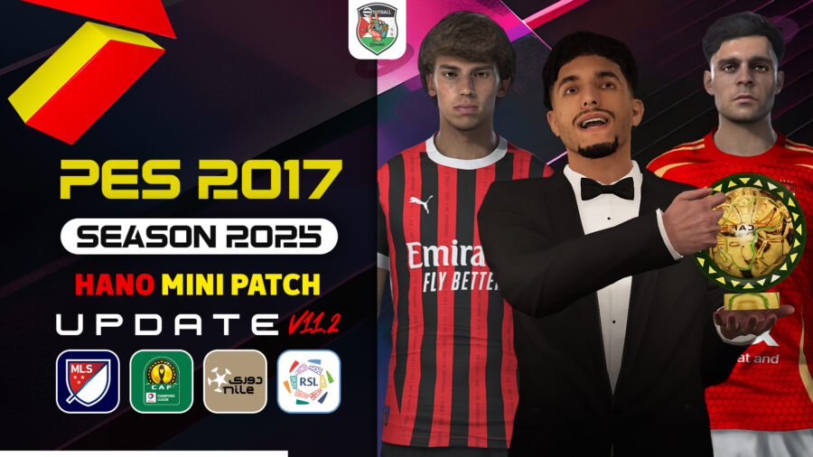

أحدث باتشات PES

باتش PES 2017 لـ PES 2025 Mini Patch and egyptoin league
استمتع بأجواء PES 2025 في نسختك القديمة PES 2017! هذا الميني باتش يشمل أحدث الانتقالات، تحديث الشعارات والأطقم الرئيسية، وبعض التعديلات البسيطة على الجيم بلاي لتجربة أقرب للواقع.
لتحميل الباتش، اختر من الروابط التالية:
ملاحظات هامة: متوافق مع PES 2017 الأصلية. لا يتطلب أي باتشات سابقة. قم بتثبيته باتباع التعليمات داخل ملف الباتش.

patch 2017 hamo mini patch v11
استمتع بأجواء PES 2025 في نسختك القديمة PES 2017! هذا الميني باتش يشمل أحدث الانتقالات، تحديث الشعارات والأطقم الرئيسية، وبعض التعديلات البسيطة على الجيم بلاي لتجربة أقرب للواقع.
لتحميل الباتش، اختر من الروابط التالية:
ملاحظات هامة: متوافق مع PES 2017 الأصلية. لا يتطلب أي باتشات سابقة. قم بتثبيته باتباع التعليمات داخل ملف الباتش.
باتشات أخرى (قريباً)
نعمل حالياً على إضافة المزيد من الباتشات والتحديثات لإصدارات مختلفة من لعبة بيس.